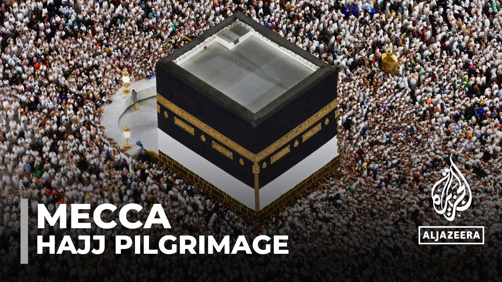

【麦加朝觐：数百万人开启一生一次的旅程】
Summary: Millions of Muslims embark on the Hajj pilgrimage to Mecca, Islam's holiest site, to perform sacred rituals, seek spiritual renewal, and experience unity and equality.
摘要： 数百万穆斯林前往伊斯兰教最神圣的圣地麦加进行朝觐，完成神圣仪式，寻求精神洗礼，并体验团结与平等。

⏱️ Estimated Reading Time: 3 min
📚 六级生词 📚 雅思生词 📚 托福生词 📚 GRE生词 📚 视频里的生词
Pilgrims on their way to the great Mosque of Mecca.
朝圣者们在前往麦加大清真寺的路上。
This is Islam's holiest site and it's where they will go around the Kaaba seven times signaling the start of a journey.
这是伊斯兰教最神圣的地方，他们将围绕天房绕行七圈，标志着旅程的开始。
That will take them from here to Sacred Plains valleys and mountains.
这段旅程将带他们从这里前往神圣的平原、山谷和山脉。
And once finished they would have accomplished an important religious Duty.
一旦完成，他们将履行一项重要的宗教义务。
The young the elderly the healthy and the sick are all together for what they say is the most significant trip of their entire lives.
年轻人、老人、健康者和病患齐聚一堂，进行他们口中一生中最重要的旅行。
Coming here where it all started is amazing.
来到这一切开始的地方令人惊叹。
This is where Islam started and to come here and hear the story of Islam is a powerful experience.
这里是伊斯兰教的发源地，来到这里聆听伊斯兰教的故事是一种深刻的体验。
Every year it's the same ritual Muslims gather here around the cubicle structure which they believe was built by Abraham and his son Ismael.
每年，穆斯林都会聚集在这座他们认为由亚伯拉罕和其子伊斯玛仪建造的立方体建筑周围，进行同样的仪式。
Mecca is also where the believe the prophet Muhammad was born and where the Quran was revealed to him.
麦加也是他们相信先知穆罕默德出生和《古兰经》向他启示的地方。
Hajj is a journey Muslims hope will change their lives.
朝觐是穆斯林希望改变他们生活的旅程。
For days they will perform a set of rituals and enter into what they describe as a state of Purity and spirituality.
数日内，他们将完成一系列仪式，进入他们所说的纯净与灵性状态。
And this explains why men prefer to wear simple white cloth.
这解释了为什么男性倾向于穿着简单的白色衣物。
If you are a prince or poor it doesn't matter here.
在这里，无论你是王子还是穷人都不重要。
What does matter is the display of unity and equality throughout the pilgrimage.
重要的是朝觐过程中展现的团结与平等。
A man came all the way from Morocco along with his mother.
一名男子与他的母亲从摩洛哥远道而来。
She won't be able to perform Hajj on her own so he wanted to be part of her journey.
她无法独自完成朝觐，所以他希望成为她旅程的一部分。
I want her blessing and I also seek repentance.
我希望得到她的祝福，同时也寻求忏悔。
I can't describe the overwhelming emotions I experience here.
我无法描述在这里经历的强烈情感。
But Hajj isn't just about people seeking to repent from past sins.
但朝觐不仅仅是人们寻求对过去罪过的忏悔。
It's also about young couples like Bahm and his wife looking for a deeper sense of purpose.
它也关乎像巴姆和他的妻子这样的年轻夫妇寻找更深层次的人生意义。
After the journey is over and we've been trying so much and it it didn't work out many times before.
在旅程结束后，我们之前尝试了很多次都没有成功。
But this time God invited us got it it came out of nowhere in like 3 days and we applied and we were accepted.
但这次真主邀请了我们，一切在三天内突如其来，我们申请并被接受了。
Soon all these people will move to the plane of Mina and prepare themselves for the most important day in Hajj.
很快，所有人将前往米纳平原，为朝觐中最重要的一天做准备。
A day of prayers incantations and Remembrance at the valley of Arafat.
这是在阿拉法特山谷进行祈祷、诵经和纪念的一天。
Make sure to subscribe to our channel to get the latest news from Al Jazeera.
请务必订阅我们的频道，获取来自半岛电视台的最新消息。